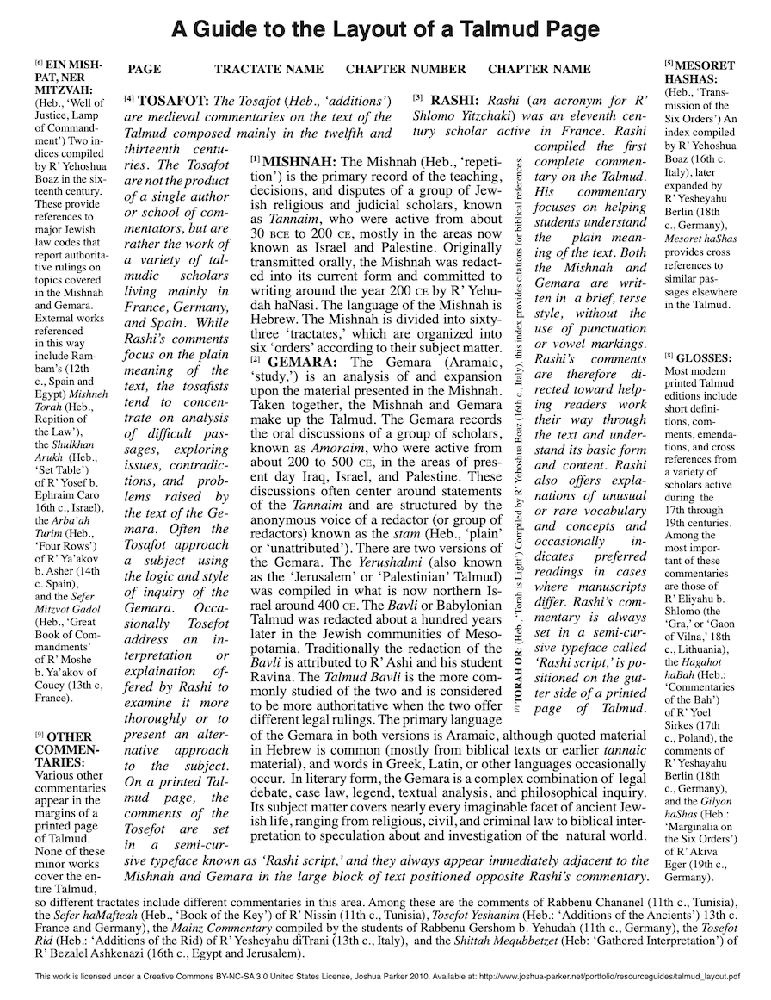

On Interconnection and the Boundary of Documents
✱ Still working on the introduction
The purpose of this text is to give examples of both analog and digital projects based on mapping and visualizing interconnection, and in so doing, come to an understanding of what interconnection is and the many ways it has been explored in projects throughout history. so though I am expressing discontent with transferring biases and conventions from paper media to digital media, I am not saying we throw away these concepts, but consider how the constructs that we create and embed in the digital realm can serve as reconceptualizations of those conventions to better reflect interconnection (by making them visual, categorizable, and interactive). questions are: which of the significant features of historical projects are valuable and convenient for working with text? how might we design the interfaces of such systems in the digital realm for working with text, based on the intercomparison of their connections.
In what follows, core concepts and ideas behind systems for accommodating interconnection are discussed and implementations are evaluated and juxtaposed to current systems, such as the World Wide Web. In so doing the aim is to to consider that “[t]he past, and the pioneers who shaped the past, may hold many suggestions as to paths [that] might be valuable to explore in the future and advice on the most productive ways to go down those paths” (Hopper 1998).
It may be the case that there are “vast potentials in electronic media that we still haven’t implemented, and we may be in danger of missing some of the greatest potential in electronic media because we mistake some situational limitations in technical development or project management for impossibility” (Hopper 1998).
Terms and Definitions
A document is a container of content objects, which can vary in modality (e.g., text, image, sound). Taken from What is Text, Really? by Steven DeRose (1990), content objects are what Charles van den Heuvel and W. Boyd Rayward (2011) call “information chunks,” what Ted Nelson (1999) calls “content items,” and what Ridi (2018) calls “information units.” In [1]traditional [2]conventional terms, a paragraph, for example, is a content object; a quote within a paragraph is also a content object; a list and a list item are content objects. In other words, content objects vary not only in modality (text, image, sound) but are distinguished by type.
The concept of interconnection, on which this project is based, denotes the various connections among the content objects within documents. As Nelson (1987) explains, connections can be internal or external to a document, stated implicitly or explicitly. For example, phrases such as “in the example given below,” “demonstrated in the image above,” or “stated previously” establish implicit internal connections. Explicit internal connections are content objects that by convention take the form of a footnote or marginal annotations — the content of which can be an elaboration of a term used, an example, a tangent, or comment. Explicit external connections are inclusions of one document segment into another (what Nelson (1980) coined transclusions) or some other direct connection by way of reference.
There are various terms across fields used to express the idea of interconnection. As Christine Borgman (2015) writes, “[t]he body of relationships among documents is sometimes known as hypertextuality. Within semiotics and literary studies, the term intertextuality is used to describe more abstract connections, “as in the influence of one text on the meaning of another”(Borgman 2015). Nelson (2015) calls it intertwingularity which “expresses a philosophical position about cross-connection,” namely that “all subjects and issues are intertwined and intermingled.” By example, imagining a data model based on interconnection would be one that allows a many-to-many relationship among entities. Entities with many many-to-many relationships would form clusters, and clusters too could form many-to-many relationships to other clusters. Further, the relationships between entities can be based on (or describe, or establish, or map) various relationship types.
Thus, interconnection here means connected on multiple levels, and is used to describe the various relationships among the content objects of documents. Mapping these connections can create complex multidimensional structures, and how exactly these are mapped and visualized is shaped by the medium of the document. In what follows, analog and digital systems designed for mapping, visualizing, and accessing content based on interconnection are examined.
Interconnection: Analog and Digital Systems
An early analog system developed for mapping and visualizing interconnection is the “compilation of Jewish Oral Law with its rabbinical commentaries” organized according to the Talmud page. Representing centuries of religious discussion, the Talmud:
consists of the core texts, commentaries by various authors […] navigational aids (such as page number, tractate name, chapter number, chapter name) and glosses. Most of these glosses are emendations to the text, while others contain useful (or cryptic) cross-references. (Neumüller transcluded from Ridi (2018))
The image below demonstrates how the Talmud Page is organized.

A Guide to the Layout of a Talmud Page by Joshua Parker
Other analog systems include the Encyclopédie by Denis Diderot and Jean d’Alembert; Paul Otlet’s principles, methods, and model of a global network of documentation; the hypothetical machine the Memex by Vannevar Bush; and Niklas Luhmann’s notecard system based on the Zettelkasten Method. The most prominent example of a digital system is the original hypertext project Xanadu by Ted Nelson. These all share the conceptualization of documents as nodes that are linked through some mechanism and according to a system. In other words, these are examples of multidimensional structures. In consideration of the scope of this entry, three of the examples given above are examined in more depth:
- Encyclopédie by Denis Diderot and Jean d’Alembert
- The work of Paul Otlet
- Xanadu by Ted Nelson
Encyclopédie is a system of intraconnections (i.e., a closed system of internal references; an intranet). Otlet’s principles, concepts, and models are based on interconnections and emergent structure (i.e., open system of references). Xanadu by Nelson is also a system of interconnections and emergent structure, but with consideration of the potential of the computer as a universal machine.
1 Encyclopédie by Diderot and d’Alembert
Various information technologies for mapping interconnection (non-)hierarchically were produced in the eighteenth century, ranging from atlases, encyclopedias, dictionaries, and suchlike. A prominent example is the Encyclopédie by Diderot and d’Alembert, which as Rosenberg (2015) argues, was an innovative system for its time. In its entirety, the Encyclopédie is a system of intraconnections — which is to say, a closed system of cross-references — “comprising 28 volumes, 72,000 articles by over 2,000 writers, and more than 3,000 plates” (Rosenberg 2015). Though the design incorporates ways for external reference, the Encyclopédie was conceived and meant to be used as an independent system.
The alphabetical structure is embedded as running headers throughout the encyclopedia (as seen in the image below), allowing access to content by headword.

Transcluded from Internet Archive
Other examples include annotated diagrams depicting the contents and functioning as a visual index. A tree diagram from the first volume is seen in the image below.

Transcluded from Internet Archive
The textual and diagrammatic ways of mapping structures are hierarchical, as was the convention at the time. However, as Rosenberg explains:
Older encyclopedias were generally organized hierarchically and by subject. Theirs was designed to be navigated by keyword, to allow readers to enter and exit at any useful point. Additionally, their encyclopedia was hypertexted. Articles were linked in a web through a system of renvois or cross-references. The Encyclopédie also offered a hierarchical subject map, echoing the structure of older works, but, in the work of Diderot and d’Alembert, the tree of knowledge was presented as only one of several heuristics. (Rosenberg 2015)
Additionally, as the computer-generated diagram (seen in the image below) elucidate, an underlying structure “implicit in the system of cross-references of the Encyclopédie” (Rosenberg 2015) is a network structure in which there are many-to-many relationships among subjects.

Diagram by Olsen and Blanchard (transcluded from Rosenberg (2015))
There are two significant points the diagram elucidates. First, conceiving knowledge as fundamentally hierarchical is not “paradigmatic of Enlightenment epistemology.” Second, nor is it intrinsic to print. As Rosenberg argues, though the
network diagram would not have been familiar to the generation of the Encyclopedists, the concepts behind it were. They too were thinking about intellectual phenomena in terms of underlying structures and aggregate relationships. (Rosenberg 2015)
In sum, significant to the design of the Encyclopédie:
- A system of intraconnections.
- Typographic embedded links.
- Multiple (non)hierarchical structures are mapped, both textual and diagrammatic in form, offering multiple ways of accessing content.
2 The Work of Paul Otlet
The work of Paul Otlet — regarded as a pioneer of the field once called documentation that branched into what is now called information science (Le Deuff and Perret 2019) — range from devising the model called Functional Requirements for Bibliographic Records in which entities are linked on multiple levels in the form of a network (Borgman 2015) to developing new approaches to organizing and accessing information by establishing theoretical principles of information. Otlet also explored how information organization might be in the future in the form of illustrations serving as metaphors of a global network of documents once media other than the book would take precedence (Heuvel and Rayward 2011).
Similar to the Encyclopédie — a project regarded as in response to the eighteenth-century information overload (Rosenberg 2015) — Otlet’s work was in response to the problem of “the enormous growth in the number of publications, specialist congresses, and international exhibitions that began to occur at the end of the nineteenth century” (Manfroid 2013).
As Rayward (1994) formulates it, the problem that Otlet analyzed and explored solutions to was “how most effectively to create, maintain, and change institutional arrangements for collecting, storing, preserving, organizing, retrieving, and disseminating all of the recorded information that is-or will be-needed within society.” With that complex problem at hand, Otlet envisioned new approaches to storing, organizing, and disseminating information while accommodating expansive growth and extensive reuse. Some of the most significant aspects of his work are delineated below.
- Conceptualization of text as modular
- Re-conceptualizing the Book as:
- A global system of linked content objects:
- Based on interconnection and emergent structure,
- And the necessity of multidimensional linking of content objects.
Otlet conceptualized text as modular — made up of parts connected to other parts (internal and external to a document). An appropriate system, according to Otlet, must therefore allow and facilitate establishing links between these parts (content objects). In designing such a system, Otlet explored the re-conceptualization of the Book as a global system of documents. As told by Heuvel and Rayward:
In a 1911 lecture on the future of the book and of bibliography, Otlet came back to the idea he had first expressed in 1892 and in subsequent publications: ‘The arbitrary division into lines and pages of the book in its present format, does not at all correspond all with the presentation of ideas’ (p. 291). He envisioned the emergence of a future format of the book in which ‘each intellectual element, in corresponding to a physical element, will create a structure such that any combination of ideas, notions, and facts will be possible.’ He suggested that this process can operate in so mechanical a fashion that in the future, the book will truly become a machine to think with (Otlet transcluded from Heuvel and Rayward (2011))
As the two illustrations below suggests, for Otlet, the development of such a system entails ripping content objects (representing ideas, notions, facts) from books and collecting each on separate paper cards.

Global Network of Universal Documentation (transcluded from Heuvel and Rayward (2011))
In another rendition, the formation, transformation, and organization of ideas are shown.

Title and Source
[1]The system must, therefore, also be designed to accommodate expansive growth and extensive reuse. For Otlet, this meant the capacity to both store and accsess content objects by links and metadata. In the image below, Otlet explored a paper card-based system to establish multidimensional links between content objects.[2]With this conceptualization of ideas, and knowledge more generally, Otlet predicated his system on having the capacity to accommodate expansive growth and extensive reuse. For Otlet, this meant the capacity to both store and access content objects through links and metadata. In the image below, Otlet explored a paper card-based system to establish multidimensional links between content objects.

Multidimensional card system (transcluded from Heuvel and Rayward (2011))
As Otlet writes:
To increase the number of sides, one might well abandon the rectangular form of the card and adopt a polygonal form, an octagon for example. For sorting and systematically selecting the ideas that have been classified hierarchically, the cards are suspended from their centre. The Book as a structure of cards thus takes a quasi-circular form and can rotate. [I]ts structure […] constitutes a Book—for it is still a book—that has abandoned the traditional form of linear text arranged according to a unique plan. It has been transformed in some way into a body with several dimensions, as many dimensions as headings such that different searches using the same graphic elements on the cards are possible. (Otlet transcluded from Heuvel and Rayward (2011))
As Heuvel and Rayward (2011) point out, though the material manifestation of such a paper card system is “impractical for many reasons,” what Otlet is describing is an open system for mapping and accessing content, based on the interconnection of subjects. Beyond these experiments with paper cards, Otlet envisioned new approaches to accessing content and new visual representations. For example, in the image below, “Otlet uses the architectural metaphor of the factory to visualize this process” (Heuvel 2017).

Laboratorium Mundaneum (transcluded from Wikimedia Commons)
{kind=link}
Though Otlet was inhibited by the constraints of working with paper-based technologies (e.g., books, paper cards, shelves, cabinets, and desks), he envisioned new ways of organizing and accessing information beyond what Weel (2012) calls the “order of the book”.
In sum, significant to the work of Otlet:
- Conceptualization of text as modular; made up of content objects.
- Developed a system based on interconnections; networked information organization based on emergent structure and new ways of linking those content objects.
- Explored ways of storing and accessing content objects through experiments with cards and metaphorical visualizations.
3 Xanadu by Ted Nelson
Nelson is most known for inventing the back button and coining hypertext. Since the 1960s, Nelson has been providing reformulations of the definition of hypertext in a series of publications in which the project called Xanadu is introduced and sometimes explained in detail. Though Xanadu has never been fully implemented, the many prototypes and writings throughout the decades have influenced several hypertext projects, including the World Wide Web, “as its own inventor Tim Berners-Lee acknowledged” (Ridi 2018).
Xanadu is a hypertext system — technically a piece of software that since its conception has been designed to run on a global network of computers, in which every single document is to reside (Ridi 2018). Documents are conceived as containing content and connections to other documents that undergo changes. To accommodate these basic features of documents, Xanadu is designed so that connections are visual links and all changes are stored and can be accessed.
In a recent publication, Nelson describes the purpose of Xanadu:
to build a deep-reach electronic literary system for worldwide use and a differently-organized general system of data management [and with the intention to] import literary concepts into a redesign of the rest of the software world. (Nelson 2015)
Much akin to the work of Otlet, the intents and purposes behind Xanadu are reflected in particular notions about the structure of ideas and how knowledge evolves. As Nelson writes:
The physical universe is not all that decays. So do abstraction and categories. Human ideas, science, scholarship, and language constantly collapsing and unfolding. Any field, and the corpus of all fields, is a bundle of relationships subject to all kinds of twists, inversions, involutions, and rearrangement. (Nelson 1965)
According to Nelson, it is this continuous evolution that a system must be designed to accommodate, which is achieved by having the capacity for new categorization systems and any arrangements of old and new content.
Further, the structure of the system must reflect the structure of ideas, which according to Nelson is nonsequential, and
indeed, our thought processes are not very sequential either. [A]s you consider a thing, your thoughts crisscross it constantly, reviewing first one connection, then another. Each new idea is compared with many parts of the whole picture, or with some mental visualization of the whole picture itself. (Nelson 1987)
In line with that notion of the structure of ideas, in his book Literary Machines (first published in 1980), hypertext is defined as “nonsequential writing—text that branches and allows choices to the reader” (Nelson 1987). Whereas writing and structuring sequential text entails choosing “one expository sequence from among the possible myriad,” writing nonsequential text entails deciding on the “interconnective structure” — “where to put things in the searchable maze” (Nelson 1987).
Based on these definitions and notions about how ideas and knowledge evolve, for Nelson, it is crucial that a hypertext system stores (and makes accessible) the many possible link types and history of changes to every document. With that as background, some of the most significant aspects of Xanadu are listed below.
Xanadu is a system:
- With a multidimensional data structure, in which there are three main categories of dimensions:
- Link dimension.
- Alternate version dimension.
- History dimension.
- Designed for interconnected documents, in which the connections:
- Are categorized into two main link types:
- Content links.
- Transclusions.
- Are implemented as bidirectional visual links.
- Expressed by two concepts:
- Transpointing windows.
- Parallel documents.
- Expressed by two concepts:
Xanadu has gone through many revisions and different prototype implementations, but the core concepts have fundamentally remained the same. In what follows, those core concepts are examined, with reflections on some of the implementations, in juxtaposition to a familiar hypertext project, the World Wide Web.
As Nelson often criticizes, the structure of the World Wide Web (and other projects such as NoteCards by Apple developed in the 1980s), commonly conceived hypertext structure as “a series of text chunks connected by links which offer the reader different pathways” (Nelson 1980). The image below is Nelson’s visual interpretation of that structure, often referred to as chunk style hypertext (Nelson 1974).
Transcluded from Nelson (1987)
In this structure, links only go outward; none of the inward links are accessible. For Nelson, this is an oversimplification of the potential of a hypertext structure and what a hypertext system can be. In contrast to chunk style hypertext is what Nelson calls windowing or compound hypertext. Seen in the image below are instances of content objects in several documents, whereby the sequence is altered so that the structure is nonsequential.
Transcluded from Nelson (1987)
Compared to the World Wide Web, Xanadu is a system that stores every change made to documents (contents and links), integrated in such a way that former states can be retrieved and reworked (Nelson 1987). Important to note is that people can choose whether those changes are local/private or online/public, as seen in the image below.

Transcluded from Nelson (1987)
Once a document is online/public, any changes made (e.g., if the author revises the content or other people reusing parts or creating connections) are stored; effectively, the history of every document is accessible to anyone. To offer historical backtracking and version control of all documents and access to the original context of reused content objects across documents, Xanadu has (beyond the conceptual dimensions) three main dimensions: link dimension, alternate versions dimension, and history dimension.
Transcluded from Nelson (1987)
The hypertext structure of Xanadu, called xanalogical structure, is designed to accommodate two categories of connections between documents, expressed by the two link types called content links and transclusions. Content links are the arbitrary connections that people (authors and readers) create as they engage with text. These are the link types that connect a content object, for example, a comment on another content object, to each other. Transclusions are reused content objects. Significantly, on a technical level (and by interactive visual means), transclusions offer a way to retrieve “the origins and context of quotations, excerpts and anthologized materials, and content transiting between versions” (Nelson 1999).
Transclusion is what quotation, copying and cross-referencing merely attempt: they are ways that people have had to imitate transclusion, which is the true abstract relationship that paper cannot show. Transclusions are not copies and they are not instances, but the same thing knowably and visibly in more than one place. (Nelson 1999)
Notably, links are not embedded in documents (as with HTML, for example), which means creating links has no repercussions to the content of the original document. Content objects are never duplicated; rather, they are transcluded — included in other documents linked to the original document. Every link is bidirectional, so every outward and inward going link is accessible and technically implemented as an overlay, much akin to “a cache, or an alias on the desktop.” This is significant because it enables people to create multiple overlapping links on the same document.
In contrast to the World Wide Web, in which links direct outward and are embedded, so that the interaction entails leaving one document to arrive at another, Nelson envisioned Xanadu as a system in which documents are viewed side-by-side with visual links, which he termed parallel documents and transpointing windows [Nelson 1999].
Parallel documents, according to Nelson:
are everywhere, but are not generally acknowledged. There are relatively few explicitly parallel documents (like Tom Stoppard’s play “Rosencrantz and Guildenstern Are Dead”, which is explicitly parallel to “Hamlet” – showing events that occur offstage in “Hamlet”, and vice versa). But implicitly parallel documents are everywhere – the parallelism of commentaries, the parallelism of long and short versions of reports, the parallelism of translations, the parallelism of holy books [Nelson 1998].
Engaging with text would thus benefit from having documents visually parallel, and with transpointing windows, which are meant to:
support analysis and detailed understanding – by parallel commentary, precise annotation and the explication of contents; by the facilitation of pinpoint controversy. These are needed not just in scholarship, but legislation, diplomacy, and anywhere that interrelated documents need to be seen. We need this visualization for side-by-side parallel documents (from holy books to legislation); for detailed explication, commentary or disagreement; for comparing successive versions of a document. (Nelson 1999)
Instead of deleting content from one place and plugging it into another (today’s distorted meanings of the venerable terms “cut” and “paste”), the author should be able to pull screen contents from old versions into new, seeing all points of origin and also seeing what contents have not yet been used. (Nelson 1999)
There are several prototype demonstrations of how the concepts of parallel documents and transpointing windows might look and work. The image below shows an implementation from 2003.
Transcluded from Nelson (2015)
In another prototype implementation (seen in the image below), the linked content objects appear when scrolling (or as Nelson puts it: “all objects sworfing (swooping and/or morphing) together” (Nelson 2016).1

Transcluded from Nelson (2016)
At this point, a reasonable concern is how to manage the complexity that may result from people creating multiple overlapping transclusions and content links. Moreover, there can be an infinite number of sub-categories within each of the two main categories of link types that can be created. Whereas Otlet’s experiment with cards is impractical in terms of implementation because of physical constraints, the problem of creating and mapping structures in the digital realm has to do with how to display and interact with the resulting complex information. As suggested by Conklin (1987) in his analysis of hypertext systems, this has been a central concern for decades.

Transcluded from Conklin (1987)
Nelson refers to it as the framing problem (seen in the image below), to which he notes that “filtering links is a key aspect of front-end design [which] is a separate study in itself” (Nelson 1987).2

Transcluded from Nelson (1987)
In another implementation, Nelson shows how the data structure (xanalogical, but in the video referred to as ZigZag) can be visually and interactively implemented as a multidimensional cell structure.
✱ Insert reflection.
References
Borgman CL. Data, Metadata, and Ted. In: Dechow DR, Struppa DC, editors. Intertwingled. Cham: Springer International Publishing; 2015. p. 67–74.
DeRose SJ. What Is Text, Really? Journal of Computing in Higher Education. 1990;1(2):3–26.
Le Deuff O, Perret A. Hyperdocumentation: origin and evolution of a concept. JD. 2019;75(6):1463–74.
Heuvel C van den. Building Society, Constructing Knowledge, Weaving the Web: Otlet’s Visualizations of a Global Information Society and His Concept of a Universal Civilization. In: Rayward WB, editor. European Modernism and the Information Society: Informing the Present, Understanding the Past. 1st ed. Routledge; 2017
Heuvel C van den, Rayward WB. Facing interfaces: Paul Otlet’s visualizations of data integration. J. Am. Soc. Inf. Sci. 2011;62(12):2313–26.
Hopper M. Vannevar Bush and Ted Nelson Revisited. Hypertext in Historical Context [Internet]. MIT Media Lab; 1998. Available from: http://web.mit.edu/m-i-t/forums/hypertext/hypertext.htm#missing
Manfroid S, Gillen J, Phillips-Batoma PM. The Archives of Paul Otlet: Between Appreciation and Rediscovery, 1944–2013. Library Trends. 2013;62(2):311–28.
Nelson TH. A File Structure for the Complex, the 134 Changing and the Indeterminate. 1965;13.
Nelson TH. Computer Lib Dream Machines. 1974.
Nelson TH. Literary Machines: The report on, and of, Project Xanadu concerning word processing, electronic publishing, hypertext, thinkertoys, tomorrow’s intellectual revolution, and certain other topics including knowledge, education and freedom. 87.1. Sausalito, California: Mindful Press; 1987.
Nelson TH. Xanalogical Structure, Needed Now More than Ever: Parallel Documents, Deep Links to Content, Deep Versioning, and Deep Re-Use. ACM Computing Surveys. 1999;31(4):32.
photonhunter. Ted Nelson on Zigzag data structures [Internet]. 2008 [cited 2021 October 30]. Available from: https://www.youtube.com/watch?v=WEj9vqVvHPc
Nelson TH. What Box? In: Dechow DR, Struppa DC, editors. Intertwingled. Cham: Springer International Publishing; 2015. p. 133–50.
Nelson TH. The Xanadu Universe [Internet]. 2016 [cited 2021 Oct 28]. Available from: https://xanadu.com/xUniverse-D6
Rayward WB. Visions of Xanadu: Paul Otlet (1868–1944) and Hypertext. Journal of the American Society for Information Science. 1994;16.
Ridi R. Hypertext. Knowledge Organization. 2018;45(5):393–424.
Rosenberg D. History Debugged. In: Dechow DR, Struppa DC, editors. Intertwingled. Cham: Springer International Publishing; 2015. p. 91–103.
Van der Weel A. Changing Our Textual Minds: Towards a Digital Order of Knowledge. Manchester University Press; 2012.
Footnotes
The idea of viewing documents side-by-side is solid, but having documents fly in and out of view as you scroll is not. There should be an interaction step in between, in which the content is only opened through deliberate action. ↩
It is my intention to contribute to this aspect of a much larger project. ↩